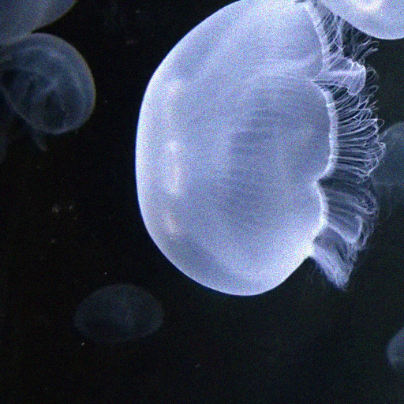

|  | |||
| Short exposure | Long exposure | Short exposure | Our Photosequencing Output |
Photosequencing aims to transform a motion blurred image to a sequence of sharp images. This problem is challenging due to the inherent ambiguities in temporal ordering as well as the recovery of lost spatial textures due to blur. Adopting a computational photography approach, we propose to capture two short exposure images, along with the original blurred long exposure image to aid in the aforementioned challenges. Post-capture, we recover the sharp photosequence using a novel blur decomposition strategy that recursively splits the long exposure image into smaller exposure intervals. We validate the approach by capturing a variety of scenes with interesting motions using machine vision cameras programmed to capture short and long exposure sequences. Our experimental results show that the proposed method resolves both fast and fine motions better than prior works.